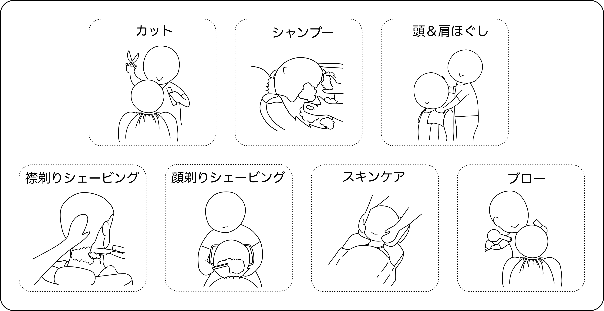
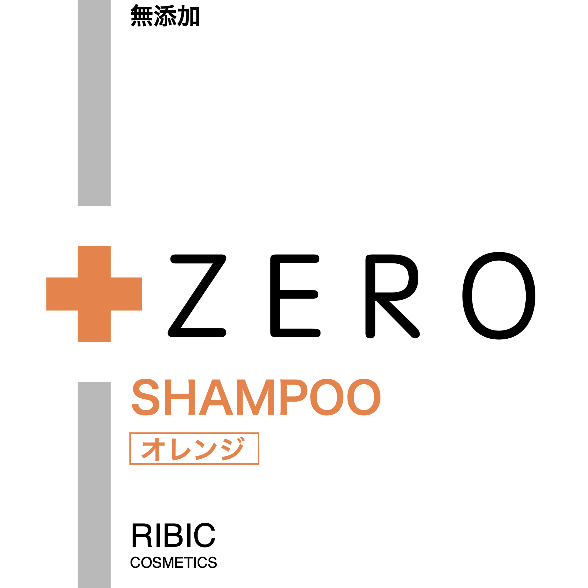
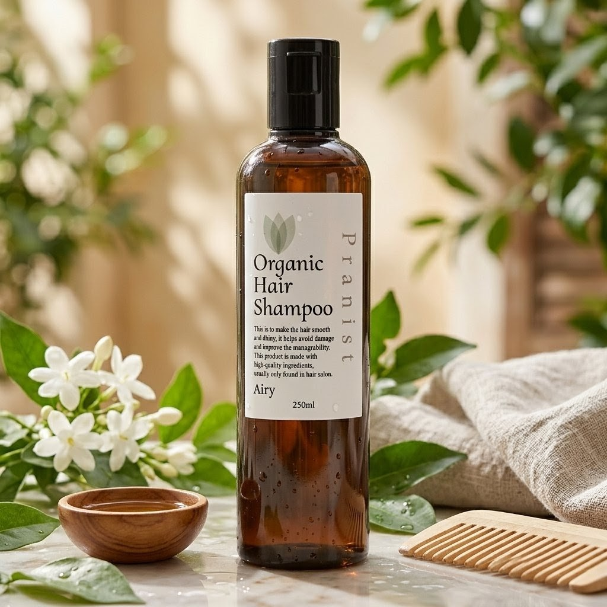
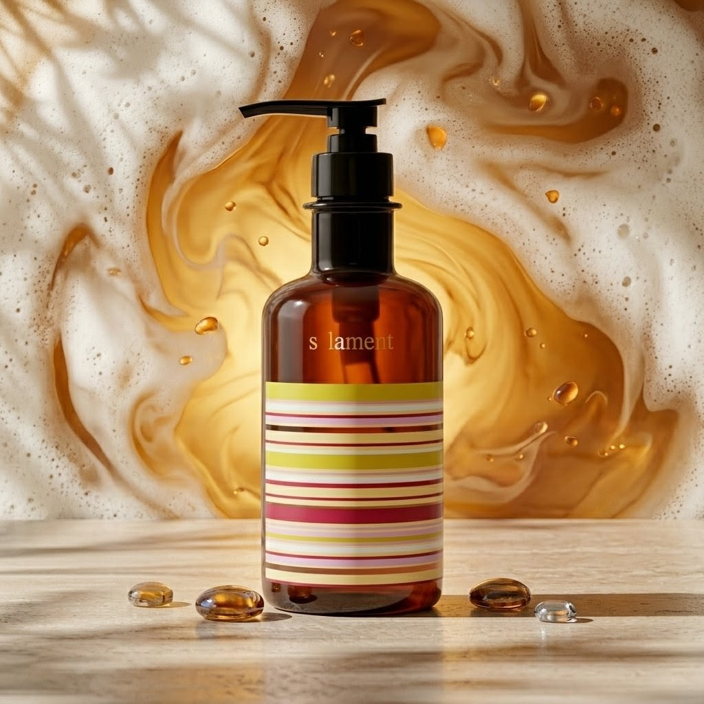
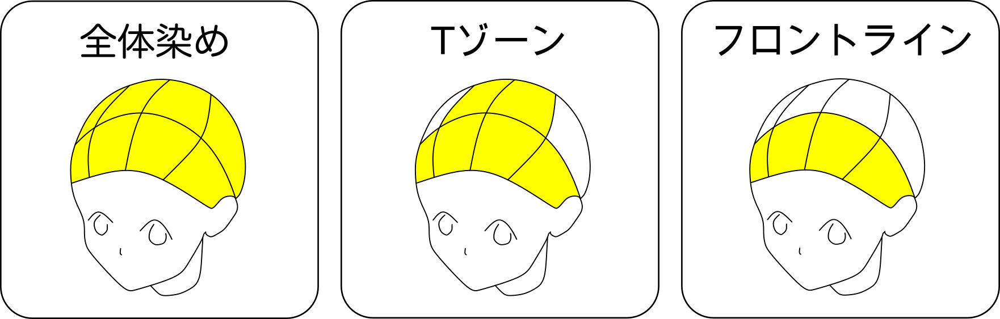

メニュー・料金
1.カットコースについて
[コース内容]

-
・カットコース
料金：¥0000 所要時間：約0分カット・シャンプー・頭&肩ほぐし・襟剃り・シェービング（顔剃り）・スキンケア・ブロー
-
・カット＋シャンプー
料金：¥0000 所要時間：約0分カット・シャンプー・頭&肩ほぐし・襟剃り・ブロー
-
・カットのみ
料金：¥0000 所要時間：約50分カット・襟剃り・ブロー
-
・
料金：¥0000 所要時間：約50分 -
・中高学生
料金：¥0000 所要時間：約分カットコースと同様
-
・小学生
料金：¥0000 所要時間：約分カット＋シャンプーと同様
-
・小学生未満
料金：¥0000 所要時間：約分カットのみ or カット＋シャンプー
[ユース割、家族割について]
当店では学生さんやお子様向けに割引をご用意しています。割引額は学年によって異なります。また、ご家族でご来店の場合は、お子様の料金からさらに100円割引いたします!ご不明な点がございましたら、ご来店時にスタッフまでお気軽にお尋ねください。
[当店独自のサービス]
-
・アラミックプロシャワーナノバブルシャワーヘッド
ナノバブルは髪の毛の約80分の1以下の大きさ。本製品は本体内部にある特殊な機構により元から水に含まれる気泡を砕き、ナノサイズの気泡「ナノバブル」を発生させます。ナノバブルには表面にマイナス電荷を帯びており、プラス電荷を帯びた細かい汚れを吸着するため、洗浄効果があると考えられています。毛穴よりも小さいため、肌や頭皮の奥まで届いて皮脂や汚れを落とし、髪と肌の洗浄を助けます
-
・スキンケア
シェービング後の肌は一時的に防御力が下がり、乾燥やヒリつきが起きやすくなります。当店では、デリケートな肌を守りながら整える『吟蔵醸 アフターシェーブミルク』を使用しています。日本酒由来のアミノ酸とセラミドが角質層まで浸透し、うるおいをスピーディにチャージ。剃刀負けによる赤みやカサつきを防ぎ、清潔感のあるなめらかな肌をキープします。さらに植物エキスが肌を引き締め、爽やかで整った印象へ導きます。ベタつきのない軽い仕上がりで、施術後すぐでもスーツに触れても不快感がありません。穏やかな清涼感のある香りが、気分をリセットしてくれます。
-
・復元ドライヤー
当店で利用している『復元ドライヤー』は、髪と肌に優しい低温風で乾かしながら、育成光線とマイナス電子の効果で髪のキューティクルを引き締め、健康的でしっとりとした髪に導く特殊なドライヤーです。熱によるダメージを抑え、振動気化乾燥方式という技術で髪の水分を守りつつ速乾を実現します。さらに磁力パワーも加わり、髪の復元力を高めることで老化抑制や頭皮の代謝向上にも役立ちます。
[シャンプー]
当店では『シャンプーをお選びいただけるサービス』があります。 シャンプーはいずれも品質にこだわり厳選した製品のみを取り揃えております。その中でも、 追加料金を頂戴する種類はより一層高い満足感をご実感いただける内容となっております。また、お気に入りのシャンプーがございましたら、ご購入いただくことも可能ですので、 どうぞお気軽にお申し付けくださいませ。
・プラスゼロシャンプーオレンジ

植物由来成分100%と無添加処方が特徴 当店の基本のシャンプー
①鉱物系、着色料、防腐剤、洗浄剤が無添加
②洗浄成分は植物由来100%
③角質正常効果のある尿素やヒアルロン酸により高い保湿効果
※こちらは販売しておりません。
・Pranist Organic Hair Shampoo

オーガニック成分と美容室品質の機能性を兼ね備え、
髪と頭皮の健やかさを考えた上質なシャンプー
①洗浄成分は植物由来１００％
②頭皮環境を整える５つのオーガニックエキス
③柔らかに広がるホワイトティーの香り、清潔感のある心落ち着く香り
・salament エテルノシャンプー

加齢による髪と頭皮の悩みに特化したエイジングケアシャンプー
①頭皮代謝を良くするフルボ酸配合
②１２種類の植物育毛成分とセラキュート-VRが加齢によるハリ、コシ等を大幅改善
③グレープフルーツとセンチフォリアバラの香り
2.カラーリングについて
[コース内容]
-
・コラーゲンカラー
料金：¥0000 所要時間：約30分※カットコースを含めた値段です。
-
・白髪ボカシ
料金：¥0000 所要時間：約40分※カットコースを含めた値段です。
[長さ、範囲について]
-
・髪の長さ
ボブ・ロングボブ（肩にかからない程度）の長さまでのお客様のみ対応しております。
-
・染めの範囲
全体染め、Tゾーン、フロントラインを基準に範囲を決めております。ご利用になる範囲を来店の際にお伝えください。また、ご要望があれば、お気軽にご相談ください。可能な限り対応させていただきます。

-
・コラーゲンカラーとは
従来のカラーにコラーゲンパウダーをプラスして、髪の内側からうるおいとハリ・コシを与えながら染める、ワンランク上の通常カラーです。一般的なカラーに比べて、施術中の負担をおさえつつツヤ感となめらかな手触りを目指せるため、ダメージが気になる方や、パサつきが出やすいエイジング毛・細毛の方にもおすすめです。
-
・白髪ボカシとは
従来の白髪染めのように白髪を濃く染め隠すのではなく、白髪をいかしながら自然なグレー調に仕上げるカラーです。黒髪とのコントラストをやわらげることで、白髪が目立ちにくく、落ち着いた印象に整えられます。短時間で施術でき、染め上がりもナチュラルなため、清潔感を大切にしたスタイルを求める方や、白髪染めほど強い色味を出したくない方におすすめです。
[カラーリングの為のケアシャンプー]
「Kracie ヘアチャート フレッシュケア」
ヘアカラー後の頭皮は、薬剤に含まれるアルカリ成分の刺激で非常に敏感でデリケートな状態です。この状態では頭皮のバリア機能が低下しトラブルに繋がるため、適切なケアが不可欠です。カラーやパーマ後の残留アルカリや薬剤を効果的に除去し、頭皮と髪を本来の弱酸性に整えます。さらに爽やかなシトラスレモンの香りで使用感も快適です。『カラー直後の敏感な頭皮に最適なシャンプー』です。※非売品
3.リラクゼーション（フェイス）について
・シェービングエステコース
料金：¥0000
所要時間：約0分
-
[こんな方におすすめ]
肌のトーンを明るくしたい方、化粧の仕上がりをアップしたい方、美容目的で体験してみたい方 -
[シェービングエステとは]
シェービング技術にエステの要素を組み合わせて、美肌効果を高める専門的な美容施術を指します。普通のシェービングと異なり、理容師国家資格を持つ施術者が、お顔を専用のカミソリで丁寧に処理しながら、角質ケアや保湿・美容液導入といったエステ的アプローチを同時に行うのが特徴です。 -
[施術内容]
-
[期待できる効果]
メイクのノリ向上・肌トーンアップ・美白効果・角質や皮脂汚れ除去による毛穴ケア・スキンケア浸透力アップ・ニキビや肌トラブルの予防・血行促進とリラックス効果・アンチエイジングサポート
・リンパトリートメント（フェイス）
料金：¥0000
所要時間：約0分
-
[こんな方におすすめ]
冷え性やむくみがある方、慢性的な疲労や体の不調を感じている方、運動があまりできない方 -
[リンパトリートメント（フェイス）とは？]
通常のマッサージが筋肉の凝りをほぐし血流を改善するのに対し、「リンパトリートメント」はリンパの流れを活性化し老廃物の排出を促すことを主目的としており、『むくみや冷え、疲労回復、免疫機能の強化、美容効果』などが期待できます。
施術はオイルを使ったオールハンドで行い、リンパ節を中心に顔、首の流れを整えます。また、リンパトリートメントは免疫細胞の働きを助けるため、風邪の予防や体質改善にも寄与し、定期的な施術で血行促進や自律神経のバランス改善、ダイエット効果も期待できます。 -
[期待できる効果]
老廃物や毒素の排出を促しデトックス効果がある・免疫力向上を助ける・むくみや冷えの改善・肩こりや疲労回復・リラクゼーション効果によるストレス解消・美肌・美容効果
・ピーリング
料金：¥0000
所要時間：約0分
-
[こんな方におすすめ]
ニキビ、ニキビ跡が気になる方、毛穴の開きや黒ずみ、ザラつきを改善したい方、シミやくすみ、小じわなどのエイジングサインが気になる方、肌のターンオーバーを促進し、明るく透明感のある肌を目指したい方 -
[ピーリングとは]
古い角質や毛穴汚れをやさしく除去し、肌の再生サイクル（ターンオーバー）を整えることで、すこやかな素肌へ導く美容施術です。
当店では、○○（※使用する薬剤・ブランド名を確認して追記）を用い、肌への負担を最小限に抑えながら、透明感・なめらかさ・保水力を高めるケアを行います。古い角質を取り除くことで、美容成分の浸透力もアップします。 -
[期待できる効果]
肌のくすみ改善・トーンアップ・毛穴の黒ずみ、ざらつきの解消・ニキビ、ニキビ跡のケア・シミや小じわの軽減・化粧ノリの向上・スキンケア成分の浸透促進・肌再生力サポート
・イヤースパ
料金：¥0000
所要時間：約0分
-
[こんな方におすすめ]
パソコンやスマホの長時間使用で、目・首・肩・頭が疲れている方、寝つきが悪い・睡眠が浅いなど、睡眠の質を改善したい方、ストレスがたまりやすく、リラックスや自律神経のバランスを整えたい方、便秘やホルモンバランスの乱れなど、体質改善を目指したい方 -
[イヤースパとは]
耳には「全身につながる200以上のツボ」が集まっており、耳への丁寧なアプローチによって全身のリラックスや不調の緩和につながるとされています。
当店のイヤースパは、耳掃除だけでなく、温感・リンパ・ツボ刺激などを組み合わせた独自のケアで、見た目や衛生面のケアに加え、深いリラクゼーションと精神的なスッキリ感を得られるのが特徴です。副交感神経が優位になることで、安眠や自律神経の調整にも効果が期待できます。 -
[期待できる効果]
眼精疲労、頭重感、肩こりの緩和・リラックスによるストレス軽減・睡眠の質向上、寝つきの改善・自律神経のバランス調整・血行促進による顔色アップ・ホルモンバランスのサポートや体質改善促進
・眉毛カット・襟剃り
料金：¥0000
所要時間：約0分
-
[こんな方におすすめ]
清潔感をアップしたい方、顔周りやうなじをすっきり整えたい方、イベントや撮影前に細部まできちんとした印象に仕上げたい方、自分では手が届かない背中の産毛を整えたい方 -
[眉毛カット・襟剃りとは]
眉毛カットは、骨格や表情バランスに合わせて眉の形や長さを丁寧に整え、自然で好印象な目元を演出する施術です。お客様一人ひとりの雰囲気に合わせたデザイン提案を行い、ナチュラルからきりっとした印象まで幅広く対応します。襟剃りは、首の後ろやうなじ部分の余分なうぶ毛を、理容師による確かな技術で処理し、清潔感と美しいラインを演出します。細部までなめらかに仕上げることで、ヘアスタイル全体の印象もぐっと引き締まります。 -
[期待できる効果]
清潔感・印象アップ・首筋やうなじの見た目がすっきり・肌トーンが明るくなる・ムダ毛によるムラやくすみの軽減・背中ケアによる肌トラブルの予防・自己処理による肌負担の軽減・リラックス＆リフレッシュ効果
・背中剃り
料金：¥0000
所要時間：約0分
-
[こんな方におすすめ]
清潔感をアップしたい方、顔周りやうなじをすっきり整えたい方、イベントや撮影前に細部まできちんとした印象に仕上げたい方、自分では手が届かない背中の産毛を整えたい方 -
[背中剃りとは]
背中剃りは、自分ではケアしにくい背中のうぶ毛をプロの手で丁寧に除去する施術です。ドレスや浴衣など、背中が見えるスタイルを楽しみたいときはもちろん、日常のボディケアとしてもおすすめです。施術では、肌への負担を抑えたシェービング剤を使用し、ムラのないなめらかな仕上がりに整えます。
部分・全体の範囲によって所要時間と料金が異なりますので、事前にご相談ください。※ -
[期待できる効果]
清潔感・印象アップ・首筋やうなじの見た目がすっきり・肌トーンが明るくなる・ムダ毛によるムラやくすみの軽減・背中ケアによる肌トラブルの予防・自己処理による肌負担の軽減・リラックス＆リフレッシュ効果
・パック各種
料金：¥0000
所要時間：約0分
-
当店で使用しているパックは、サロン向けに作られたプロ仕様のものを取り揃えています。市販のものとは違い、しっかりとした専門ケアを前提に作られているため、より実感のある仕上がりをお楽しみいただけます。プロの手で丁寧に扱うことで本来の良さを感じていただける特別なパックです。いつもとちょっと違う、贅沢なスキンケアタイムをぜひご体験ください。
-
『ナボカル アルガトニフィーパック』
施術後のほてりを感じる肌に心地よい冷感を与える、海藻主体の鎮静パックです。ほてりや赤みのある肌を落ち着かせ、拭き取りによって回収できます。さらなる刺激を与えず、見えない炎症を抑えることにもつながります。塗布時は流動性があり、剥がす時には海藻の成分がゼリー状に固まり、肌に残らず取り除けます。
〈シェービングエステ〉〈ピーリング〉〈トリートメント（フェイス）〉におすすめ。 -
『ビザビ サルベイトジェルパック』
炭酸の力で酸素を肌の隅々まで届け、肌細胞を活性化・蘇らせることを目的としたパックです。血液中の酸素を細胞により多く供給するために「ボーア効果」という血液中のヘモグロビンの特性と働きを活用し、若々しい弾けるお肌へと導きます。
〈シェービングエステ〉〈トリートメント（フェイス）〉〈イヤースパ〉におすすめ。 -
『クラシエ DNAリンクル美容液マスク』
美白とシワ改善のW効果を持つ薬用シートマスクです。ナイアシンアミド配合で、乾燥による小じわを目立たなくし、ハリ・弾力のあるうるおい肌へ導きます。 また、 立体3D構造とストレッチ素材のマスクがフェイスラインを引き上げるように密着し、首元までしっかりカバー出来ます。7種の生体関連成分と3種の調整成分が角質層にうるおいを届け、乾燥やハリが気になる肌を集中ケアします。口コミでも「密着感が高い」「首までしっとり」「乾燥ケアに最適」と人気のプロ仕様の高保湿エイジングケアマスクです。
〈シェービングエステ〉〈トリートメント（フェイス）〉〈イヤースパ〉におすすめ。
3.リラクゼーション（ヘッド）について
・ヘアケア
料金：¥0000
所要時間：約0分
-
[こんな方におすすめ]
頭皮のベタつきや毛穴の汚れが気になる方、抜け毛予防や血行促進を求める方、スタイリングの土台を整えたい方 -
[ヘアケアとは]
頭皮リンパスパクレンジングで、炭酸系クレンジング剤を使用して、髪や頭皮の健康維持を目的とした専門的な美容施術です。重曹（炭酸水素Na）が主成分の粘性ジェルが頭皮に密着し、炭酸泡を発生させて毛穴の汚れや余分な皮脂を優しく浮かせて除去しながら、マッサージにより血行を促進します。界面活性剤フリーのシンプル４成分で構成され、サロン専売品ならではの上質な仕上がりを提供します。 -
[期待できる効果]
毛穴ケア（皮脂・汚れの除去）・爽快感と血行促進・リラックス効果・頭皮の保湿と乾燥防止・スキャルプスパ効果
※「ヘアケア」は、頭皮クレンジングを中心とした“リンパトリートメント（ヘッド）”の土台ケアとして位置づけられるメニューです。リンパトリートメントの前に行うことで、浸透性や効果をより高める相乗効果があります。
・リンパトリートメント（ヘッド）
料金：¥0000
所要時間：約0分
-
[こんな方におすすめ]
頭の重だるさやこり、眼精疲労を感じる方、睡眠の質を改善したい方、美髪、発毛、髪質改善を目指したい方 -
[リンパトリートメント（ヘッド）とは？]
頭部のリンパの流れを刺激し、「老廃物や余分な水分の排出を促す」オイルリンパトリートメントの一種です。頭皮の血流を改善することで、慢性的な偏頭痛の緩和、小顔効果、肌のハリやツヤの向上、髪質改善や発毛促進、睡眠の質の向上などが期待できます。具体的な施術では、指の腹でこめかみや耳周りのリンパ節を流し、頭頂部を中心にほぐして頭皮全体を活性化させます。頭皮環境を整え、髪の健康維持にもつながります。 -
[期待できる効果]
むくみ改善・小顔効果・頭痛、肩こり、眼精疲労の軽減・髪のハリ、コシ、ツヤの向上・ストレス緩和と安眠効果・自律神経バランスの調整・心身のリフレッシュ
※「リンパトリートメント（ヘッド）」は、“ヘアケア”と組み合わせることで相乗効果を発揮します。オイルの浸透と血流促進がさらに高まり、より深いリラクゼーションを得られます。